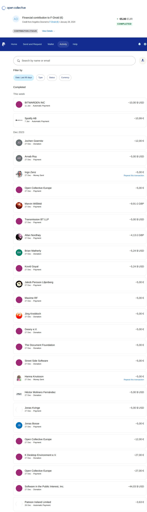

What if I paid for my most frequented websites?
TEMPDESC
Requirements for consideration
- No advertising, trackers, etc., whatsoever.
- Free. All of the main features must be available for free.
- No already rich people/companies.
- No association with or reference to crypto“currencies” because these are greed incentivizing pyramid schemes.
- That I'd be quite annoyed if said software didn't exist.
—Angelino Desmet; n N 2023.
Latest edit: n N 2024.
PS happy holidays. Or not. It's common to feel lonely this time of year. Donating to Bunnytrack 🐇 did make me feel better though.
🎅
Proof of payments
Click here to see the proof of payments (in case the clickability of the details/spoiler HTML tag wasn't clear in the text).
Not in the PayPal list below: FlorisBoard.

Pending payments
- LyX: PayPal is throwing a “Things don't appear to be working at the moment. Please try again later.” error.
- Soulseek: Stripe only supports credit card, I don't have one.
- Transover: credit card only.
Sources
- GNU Operating System: Microsoft's Software is Malware.
- Urban Dictionary: Windoze.
-
- Lichess: Block ads and trackers.
- Ditto Music: How Much Do Music Streaming Services Pay Musicians in 2023.
- Know Your Meme: Shut Up And Take My Money!
- Betterbird: Donation Appeal 2023.
- World Population Review: Median Income by Country 2023.
-
-
- GoComics: Calvin and Hobbes by Bill Watterson for October 14, 1993.
- Peter Gleick, Mastodon: Bezos and Musk have it deeply wrong.
- Wikiquote: Buckminster Fuller, 1970s.
- BX1, 2023: Anderlecht : la transformation de l’immeuble Citygate II oblige le skatepark Byrrrh & Skate à encore déménager.
- Jerry Useem, The Atlantic, 2017: Power Causes Brain Damage.
- Chuck Collins, Helen Flannery, 2020: Gilded Giving 2020, How Wealth Inequality Distorts Philanthropy and Imperils Democracy.
- David Dawkins, Forbes, 2019: Buffett, Gates And The Giving Pledge: Trust Issues For Billionaire Philanthropists.
- Metro: Rapporteur: woningnood door slecht beleid, niet door vluchteling.
- Very Bad Wizards: Episode 256: The Right to Punish?
- Melissa Lane, Britannica: philosopher king.
-
- Know Your Meme: Your Greed Is Hurting The Economy.
- Nicole Parsons, George Takei: $1 trillion in unpaid corporate taxes would get everyone health care, an education, and a secure retirement. No wonder the GOP is thwarting it.
-
- The Taxcast: The People vs Microsoft.
- Wikipedia: Fatality (Mortal Kombat).
- YouTube: Ricky Gervais – Golden Globes 2020 (Uncensored, HD).
- Voicemod: Mortal Kombat's Finish Him sound byte - Meme Sound Effect Button for Soundboard.
- YouTube: Davos 2019 - The Cost of Inequality.
- Sound FX Center: MK Deception Fatality Sound Effect.
-
Comments